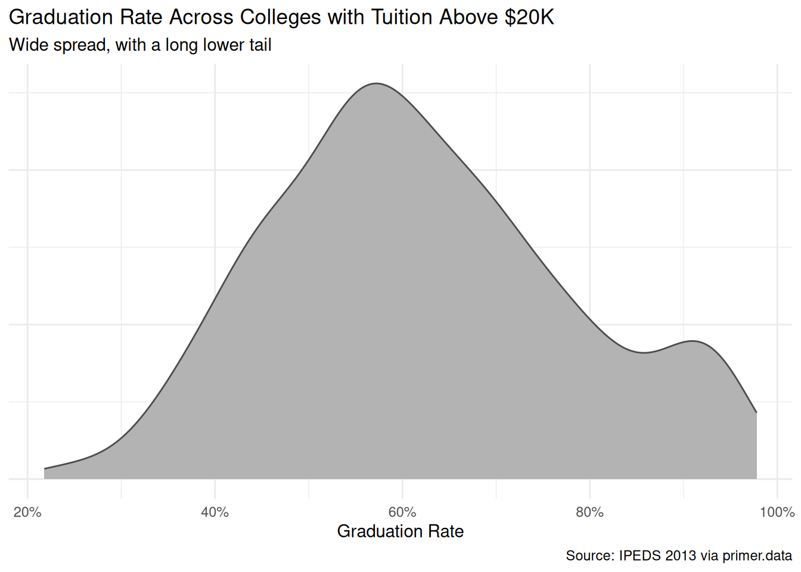
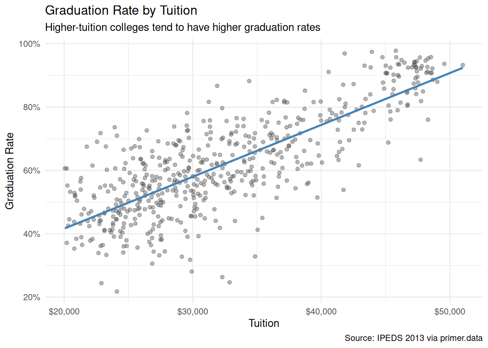
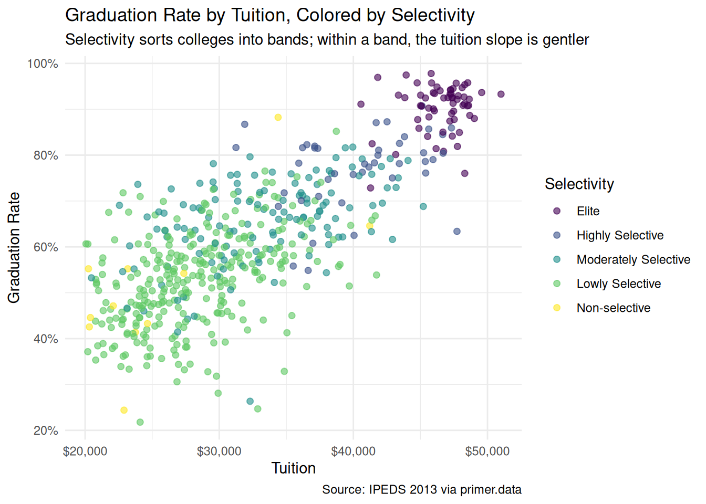
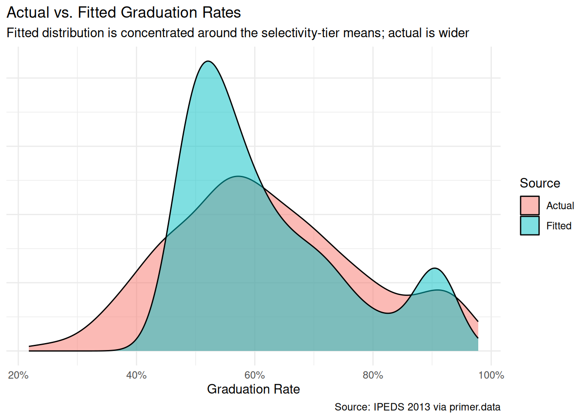
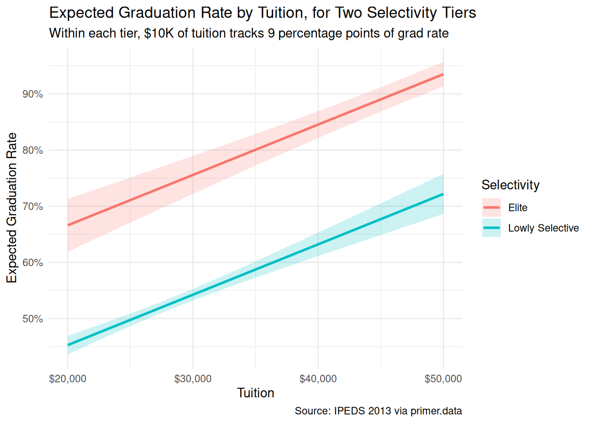

7 Colleges
The four Cardinal Virtues for working through a data science problem are Wisdom, Justice, Courage, and Temperance. This chapter — the third example chapter in the Primer, after Recruits (predictive) and Trains (causal) — works through a predictive linear regression with a continuous covariate and a multi-level categorical covariate. The matching tutorial is 07-colleges in the primer.tutorials package; almost every line of code in that tutorial appears here, surrounded by more prose, more exploration, and a paired causal version of the same question.
Imagine that you are a data scientist at a non-profit that helps high-school seniors choose a college. The Executive Director has a big-picture goal — make sure students who use the service end up at colleges where they’re more likely to graduate, recover the cost of their tuition, and avoid leaving with crushing debt — and trusts you to figure out what evidence-based recommendations the service should make. Many models would help: predicted graduation rate, predicted post-college earnings, predicted debt at graduation, the relationship between major choice and labor-market outcomes, the relationship between athletic admission status and academic outcomes. This chapter builds just one of them: a predictive model of a college’s graduation rate as a function of its tuition (the sticker price) and its selectivity (a five-level admissions-difficulty rating). The estimate alone won’t determine which colleges the service recommends, but the graduation-rate piece is one good input. There are many decisions to make.
The data we will work from is colleges, available in the primer.data package. It is a 950-row teaching cut of the Department of Education’s 2013 IPEDS data on U.S. four-year colleges and universities. Each row is one institution; key columns are tuition (annual tuition and fees in units of $10,000 — a value of 3 means $30,000), grad_rate (the share of an entering first-time, full-time bachelor’s-degree-seeking cohort that graduated within six years, on a 0–1 scale), selectivity (an ordered factor with five levels from Non-selective through Elite), sat (median SAT score), and enrollment (the size of the institution). After dropping rows with missing values and restricting to institutions with tuition above $20,000 — the range our question will compare within — we are left with 542 colleges. The selectivity factor is converted to an unordered factor with Elite as the reference level so that regression coefficients read cleanly as “less selective relative to Elite.”
7.1 Wisdom
Wisdom begins with a question and then moves on to the creation of a Preceptor Table and an examination of our data.
Wisdom commits us to a question precise enough to be answered. The Preceptor Table makes the commitment concrete: it is the smallest table that, if every cell were filled in with the truth, would make the question’s answer easy to read off.
The combination of some data and an aching desire for an answer does not ensure that a reasonable answer can be extracted from a given body of data. — John W. Tukey
7.1.1 IPEDS and the U.S. higher-education data ecosystem
The data in colleges comes from IPEDS, the Integrated Postsecondary Education Data System, run by the National Center for Education Statistics (NCES) inside the U.S. Department of Education. IPEDS has been the primary census of U.S. postsecondary institutions since 1986. Every institution that participates in federal student-aid programs — which is, in practice, every accredited college and university that wants to enroll students who use Pell Grants or federal student loans — is required by law to complete IPEDS surveys. The result is a near-complete annual snapshot of about seven thousand U.S. postsecondary institutions: enrollment by sex, race, age, and full-time status; tuition and fees; financial aid awarded; degrees conferred; staff and salaries; and persistence and completion outcomes for entering cohorts.
The IPEDS data we use is from the 2013 collection cycle. The colleges tibble is a teaching cut: restricted to four-year colleges and universities (no community colleges, no for-profit certificate mills), and with the universe further narrowed to institutions that report all of tuition, grad_rate, and selectivity cleanly. That gives us about 950 institutions, of which 542 sit above the $20,000 tuition threshold the chapter’s question targets.
A note on the time gap. The data is from 2013; our Executive Director’s question is about students choosing colleges now. Tuition has risen, on average, by roughly the rate of inflation plus 2–3 percentage points per year over the past decade, so the $20,000 tuition mark of 2013 corresponds to roughly $28,000–$30,000 in 2026 dollars. The relationship between tuition and graduation rate may also have shifted in less obvious ways: the price-discounting practice of awarding institutional aid, which makes the net price differ substantially from the sticker price, has intensified, and the link between sticker price and student outcomes is mediated by financial aid policy more than it was in 2013. The chapter uses the data we have; the chapter’s user should remember the data’s vintage.
7.1.2 What grad_rate measures
The grad_rate column is IPEDS’s standard graduation-rate measure: the share of a cohort of first-time, full-time, bachelor’s-degree-seeking students who completed a bachelor’s degree at the same institution within 150% of “normal” time — six years for a four-year program. The denominator is the entering fall cohort; the numerator counts only students who finished at the same school. Transfers out are counted as non-graduates, even if they finished a bachelor’s somewhere else; transfers in are not counted at all.
This is a useful number, but it is a narrower one than it sounds. A college that loses many students to transfer (to a flagship state university, for example) looks worse on grad_rate than its actual contribution to bachelor’s-degree completion warrants. A college that admits many part-time or transfer-in students — who are not in the IPEDS first-time, full-time cohort — has those students invisible to grad_rate entirely. The measure also excludes adult learners returning to school, students who pause and resume their education, and any cohort smaller than the IPEDS reporting threshold. For our chapter, grad_rate is the outcome we have; the gap between that and “what fraction of incoming students will graduate” is a validity concern we will return to in Justice.
7.1.3 The primary question
The primary question for this chapter is predictive:
What is the difference in expected graduation rates between colleges with tuition of $20,000 and colleges with tuition of $30,000?
This is a predictive question — the kind of question that calls for a predictive model. We want a single number: the expected difference in graduation rates between two groups of colleges, one charging about $20,000 and one charging about $30,000, expressed in percentage points. The Preceptor Table that would let us answer it has three columns — one identifying each college, one for grad_rate, one for tuition — and one row per U.S. four-year college we want the answer to apply to.
A note on language. Difference in expected graduation rates and effect of raising tuition are not the same thing. The difference is a between-group comparison: line up colleges charging $20,000, line up colleges charging $30,000, compare averages. The effect of raising tuition is a within-college claim: if this college raised its tuition from $20,000 to $30,000, would its graduation rate change? The predictive framing answers the first; the causal framing (which we revisit as the paired question) attempts the second. We use the same fit, but the two readings commit to different assumptions and license different claims. The Preceptor Table is about a between-group comparison the model is well-positioned to estimate.
| Preceptor Table --- Primary (predictive) question1 | ||
| College | Graduation Rate | Tuition |
|---|---|---|
| 1 If all the information in this table were available, we could answer the question: What is the difference in expected graduation rates between colleges with tuition of $20,000 and colleges with tuition of $30,000? | ||
| 2 Each row is one U.S. four-year college or university we want our recommendation to apply to in 2026. The three example rows are real institutions chosen to span the selectivity range; the same three institutions appear in the Data block of the Population Table below at 2013 (with different values reflecting the time gap), making the data-to-Preceptor representativeness question visible. | ||
| 3 Six-year graduation rate for the entering first-time, full-time bachelor's-degree-seeking cohort, as defined by IPEDS. Transfers out are counted as non-graduates; transfers in are not counted at all. | ||
| 4 Annual sticker-price tuition and fees in dollars. The sticker price is what the institution publishes; the net price most students actually pay, after institutional aid, is often substantially lower. | ||
The Preceptor Table commits us to exactly one covariate column (Tuition) beyond the outcome. The model that answers the question may use additional covariates (selectivity, for instance, which the chapter ends up using) but the Preceptor Table only carries what the question explicitly mentions. Additional columns belong to the model, not to the question.
7.1.4 Exploring the data
Before fitting a model, look at the data. You can never look too closely at your data — the hour spent on a careful EDA almost always saves a day downstream.

Graduation rates span essentially the full range from about 10% to 98%, with a long lower tail and a softer right-side concentration around 60–80%. The distribution is plainly not normal — it has a left skew and the bounded support shows up as boundary effects — but with several hundred observations the linear-regression machinery is robust enough to be useful, and the headline question is about a difference of means rather than about extreme percentiles.

Graduation rate slopes upward with tuition — the unconditional bivariate relationship the headline question concerns. A linear smooth fit through the cloud of points has slope of roughly 16 percentage points per $10,000 of tuition. The cloud is noisy, with substantial spread around the line; many high-tuition colleges have modest graduation rates and many moderate-tuition colleges have high ones. The relationship is real, but tuition explains only a portion of the across-college variation.

Coloring the same scatter by selectivity tier sorts the cloud into horizontal bands: Elite colleges (in the top-right corner) cluster near 90% graduation; Lowly Selective colleges (the largest group) sit broadly around 50%. Within each band, the tuition slope is flatter than the unconditional slope — which is the central confounding lesson of the chapter. Tuition correlates with graduation rate partly because high-tuition colleges are high-tuition partly because they are more selective, and the selectivity itself is the main driver of graduation rate. The model in Courage will sort this out.
A few specifics worth flagging from the EDA:
-
The tuition variable is recorded in units of $10,000, so a value of
3means $30,000/year, not $3. Easy to miss in the raw output; easy to misinterpret downstream. - Selectivity is unbalanced after the tuition filter: the 542 colleges with tuition above $20,000 break down as roughly 296 Lowly Selective, 130 Moderately Selective, 63 Elite, 42 Highly Selective, and 11 Non-selective. Most of the unselective and non-selective tail dropped out with the tuition filter.
-
The graduation-rate column is on the 0–1 proportion scale, but for human-readable axes the chapter renders it as percentages (
scales::label_percent()).
7.1.5 The paired question
The difference between predictive models and causal models is that the former have one column for the outcome variable and the latter have more than one column.
Every chapter pairs its primary question with one in the opposite framing. Since our primary question is predictive, the paired question is causal:
What is the causal effect of tuition on a college’s graduation rate?
This is an awkward question. Tuition is not a unit-level manipulable treatment in the way that, say, a randomized postcard or a randomized exposure on a train platform is. Tuition is set by an institution’s Board of Trustees, in consultation with administrators and financial-aid offices, as part of an integrated bundle that includes admissions policy, financial-aid policy, faculty hiring, and dozens of other moving pieces. We cannot, even in principle, “raise this college’s tuition by $10,000 and hold everything else fixed” — the everything-else is part of how the tuition decision gets made.
The paired causal question is therefore in the same awkward space as the paired causal question in the Recruits chapter, where we asked about toggling a recruit’s sex — another counterfactual without a coherent referent. Per the Primer’s general rule we lean into the awkwardness rather than avoid it, because the contrast makes the predictive/causal distinction visible.
The same fitted model serves both framings. The same coefficient (\(\beta_1 \approx 0.09\), or 9 percentage points per $10,000 of tuition) is the answer to both. What differs is the analyst’s commitment:
- The predictive reading says: when we compare two colleges differing in tuition by $10,000 but otherwise comparable on selectivity, the higher-tuition college has an expected graduation rate about 9 percentage points higher. This is a statement about comparison between two groups, with no claim about what would happen if any specific college changed its tuition.
- The causal reading would say: raising this college’s tuition by $10,000 would raise its expected graduation rate by 9 percentage points. This is a within-college claim, requiring us to defend the implausible counterfactual that the rest of the institution would remain unchanged.
The predictive reading is honest. The causal reading is not. The point of writing the paired Preceptor Table is to make the difference between the two framings visible, even when the causal framing is not one we would actually claim.
| Preceptor Table --- Paired (causal) question1 | |||
| College | Grad Rate at $20K | Grad Rate at $30K | Tuition |
|---|---|---|---|
| 1 If all the information in this table were available, we could answer the question: What is the causal effect of tuition on a college's graduation rate? The implied manipulation (changing a college's tuition while holding everything else fixed) is not realizable; the table is a pedagogical device for making the predictive/causal distinction visible, not a defensible causal claim. | |||
| 2 Each row is one U.S. four-year college. Same units as the primary Preceptor Table. | |||
| 3 Each row's cross-hatched cell marks the unobservable counterfactual --- the graduation rate the college would have if it charged the other tuition, holding everything else fixed. The truth would exist if the counterfactual existed; nothing in reality could ever reveal it because tuition is not separable from the institutional bundle. | |||
| 4 The college's actual sticker-price tuition. Putting it under a Treatment spanner is what marks this table as causal; in the primary Preceptor Table the same column sat under a Covariate spanner. | |||
The two Preceptor Tables differ in exactly the bookkeeping that distinguishes predictive from causal:
- The primary table has one outcome column (
Graduation Rate); the paired table has two potential-outcome columns (Grad Rate at $20K,Grad Rate at $30K), with the unobservable counterfactual hatched in each row. - The primary table has the
Tuitioncolumn under a Covariate spanner; the paired table has the same column under a Treatment spanner. The column itself is identical. Only the spanner — the analyst’s commitment — changed.
The same fitted model serves both questions. The chapter’s two Temperance answers will read the same number through the two framings.
7.2 Justice
Justice concerns the Population Table, the four key assumptions which underlie it (validity, stability, representativeness, and unconfoundedness), and the choice of probability family and link function for the data generating mechanism.
Justice is where you (or your critics) raise concerns about whether the model will do what you want it to do — and where you commit to defending it. The four assumptions are the named families of concerns. They are not testable from the data alone; they are choices the analyst makes and defends.
The bridge runs data → population → Preceptor Table. The data tells us about the population from which both the data and the Preceptor Table are drawn; the population tells us about the Preceptor Table’s units. Justice’s job is to make sure both arrows are defensible.
There are known knowns. There are things we know we know. We also know there are known unknowns. That is to say, we know there are some things we do not know. But there are also unknown unknowns, the ones we do not know we do not know. — Donald Rumsfeld
7.2.1 The Population Table for the primary question
| Population Table --- Primary question1 | ||||
| College | Year | Graduation Rate | Tuition | |
|---|---|---|---|---|
| 1 Data rows are 542 U.S. four-year colleges that reported complete IPEDS data for tuition, grad_rate, and selectivity in 2013 and that had tuition above $20,000. Preceptor rows are the U.S. four-year colleges our non-profit's recommendations will apply to in 2026. The same three example institutions appear in both blocks: their 2013 values come from the actual IPEDS data; their 2026 values reflect 13 years of tuition inflation and the modest drift in graduation rates that institutions of their size typically experience. | ||||
7.2.2 Validity
Validity is the consistency, or lack thereof, in the columns of the data set and the corresponding columns in the Preceptor Table.
Validity is about columns. Two columns can have the same name and measure different things; two columns can have different names and measure the same thing.
For our problem, the outcome column grad_rate measures the IPEDS-defined six-year graduation rate for first-time, full-time bachelor’s-degree-seeking students. The Preceptor Table’s outcome column is meant to capture the college’s contribution to whether a student who enrolls there will graduate. Those two are close but not identical. A college that loses many students to transfer-out (to flagship state universities, for example) looks worse on grad_rate than its actual contribution warrants. A college that admits substantial numbers of transfer-in students — a growing share of all U.S. undergraduate enrollments — has those students invisible to the metric. For a non-profit trying to help individual students choose colleges, the column we have is a noisier proxy than the column we wish we had.
The covariate column tuition is the sticker price: what the institution publishes as its annual tuition and fees, before any institutional financial aid. The Preceptor Table’s tuition column would ideally be the net price the student pays. At many high-tuition colleges — especially the Elite and Highly Selective ones — the average student pays far less than sticker, sometimes a half or a third. A student trying to decide between two colleges based on cost should be looking at net price, not sticker. Our model answers the sticker-price question; translating to the question the student actually cares about requires further work the data doesn’t support.
7.2.3 Stability
Stability means that the relationship between the columns in the Population Table is the same for three categories of rows: the data, the Preceptor Table, and the larger population from which both are drawn.
Stability is a statement about parameters, not distributions. A shift in the marginal distribution of tuition or grad_rate between 2013 and 2026 does not, by itself, violate stability. What violates stability is a change in the parameter governing the relationship: the slope of grad_rate on tuition, the intercept, the residual variance.
Tuition has risen substantially since 2013 — the average annual increase at four-year colleges has run at 3–4% — so the distribution of tuition has shifted to the right. Graduation rates have also drifted, gently upward at most institutions. Neither of those, on its own, violates stability. The thing that would violate stability is a change in how strongly tuition tracks graduation rates: a $10,000 difference between two 2013 colleges may not correspond to the same expected graduation-rate difference between two 2026 colleges, because federal financial-aid policy, the practice of price discounting, and the institutional composition of the higher-tuition tier have all shifted.
A common confusion is to point at any change between 2013 and 2026 and call it a stability violation. It isn’t. The mean tuition has gone up; the mean graduation rate has gone up modestly; the mix of institutions in any given tuition band has shifted. None of that, on its own, is a stability violation. What hurts us is a change in \(\beta_1\), the parameter we are estimating. Distribution shifts are everywhere; parameter shifts are what hurt us.
7.2.4 Representativeness
Representativeness, or the lack thereof, concerns two relationships among the rows in the Population Table. The first is between the data and the other rows. The second is between the other rows and the Preceptor Table.
Two links to defend.
Data → population. The IPEDS data is, for federally-aid-participating institutions, a census rather than a sample — every accredited four-year college that participates in federal student aid is required to report. That is unusual: for once we are not worrying about survey weights or selection probabilities. The data block of the Population Table is, modulo the tuition filter, the full population of U.S. four-year colleges as of 2013.
The catch is the tuition filter. By restricting to colleges with tuition above $20,000, we dropped roughly 408 institutions, almost entirely public flagship and regional universities with in-state tuition below that threshold. Those institutions are systematically different from the ones we kept: they enroll many more students, they have different state-funding-driven price dynamics, and their graduation rates are influenced by factors (commuter status, in-state residency, transfer flows) that bind less tightly at high-tuition private institutions. The model we fit is therefore a model of the high-tuition college universe, not of the full four-year sector. The non-profit’s Executive Director might quite reasonably want to recommend a $12,000-per-year flagship public university to a student, and our model would have nothing to say about it.
Population → Preceptor Table. The Preceptor Table’s rows are the colleges we want our recommendations to apply to in 2026 — that universe is plausibly close to the 2013 IPEDS universe in composition (the major shifts have been gradual, not categorical), but it is not identical. New institutions have opened; old institutions have closed; a handful of high-profile public universities have crossed the $20,000 threshold for the first time. The model we fit will be applied to a slightly different list of institutions than the one it was estimated on.
A non-representative sample does not guarantee a biased estimate; by chance it might be right. But chance is the only mechanism left to defend us, and we have no principled reason to expect it to work in our favor.
7.2.5 Unconfoundedness (paired causal question only)
Unconfoundedness means that the treatment assignment is independent of the potential outcomes, when we condition on pre-treatment covariates.
Unconfoundedness applies only to the paired causal question. The primary predictive question does not require it.
For the paired question, unconfoundedness is not defensible. Tuition is not a manipulable treatment in any reasonable sense, and the implied counterfactual — a college’s tuition assigned independently of its potential graduation rates — is incoherent. Tuition is set by institutional choice, and institutions that choose higher tuition are doing so for reasons that are tightly bound up with the things that determine graduation rates: endowment levels, faculty resources, admissions selectivity, financial-aid policy, prestige, and the demographic composition of the student body. The variables we don’t condition on in our model are the variables that determine both the “treatment” (tuition) and the outcome (graduation rate) at once.
The selectivity covariate we add in Courage helps a little — it absorbs a large chunk of the confounding that tuition picks up on its own — but it doesn’t eliminate it. Endowment per student is uncontrolled; financial-aid generosity is uncontrolled; institutional culture is uncontrolled. The model’s tuition coefficient, even after adjusting for selectivity, would not be a clean causal effect.
This is the substantive reason the paired causal question is awkward, not just rhetorical. We carry the paired Preceptor Table through the chapter to show what the bookkeeping would look like if we made the causal commitment, but Temperance’s causal reading will not be defensible as a causal claim about the world. It is defensible only as a translation exercise — “if we made these (implausible) assumptions, here is what the model would say.”
7.2.6 The Population Table for the paired question
The paired Population Table has the same row structure as the primary — Data rows from 2013, Preceptor rows from 2026 — but two outcome columns instead of one (Grad Rate at $20K, Grad Rate at $30K). In Data rows, only one potential outcome is observed — the one matching the actual tuition; the other is .... In Preceptor rows, both potential outcomes are filled in, with the unobservable one hatched.
| Population Table --- Paired question1 | |||||
| College | Year | Grad Rate at $20K | Grad Rate at $30K | Tuition | |
|---|---|---|---|---|---|
| 1 Same row structure as the primary Population Table, with two outcome columns instead of one. Data rows have only one observed potential outcome (the one matching the actual tuition) and a '...' for the counterfactual. Preceptor rows have both filled in, with the unobservable counterfactual hatched. Both data and Preceptor blocks have tuition values that don't neatly equal $20K or $30K --- the paired-table construct asks us to imagine what each college's grad rate would be at each of two tuition values, separately from what its tuition actually is. | |||||
7.2.7 Probability family and link function
The outcome grad_rate is a continuous variable bounded between 0 and 1 (a proportion). The probability family for a continuous outcome is Normal:
\[Y \sim \mathcal{N}(\mu, \sigma^2)\]
The bounded support means the Normal family is a polite fiction — the true distribution cannot extend below 0 or above 1 — but for the bulk of our data (which sits between 0.2 and 0.95), the Normal approximation is fine. A more rigorous specification would use a beta-regression or logistic-link model to respect the bounds; the chapter does not, and the simpler model gets the headline number close to right.
The link function is the identity:
\[\mu = \beta_0 + \beta_1 X_1 + \cdots + \beta_n X_n\]
Our model will be a linear regression. The covariates we use are settled in Courage.
7.3 Courage
Courage creates the data generating mechanism.
The three languages of data science are words, math, and code, and the most important of these is code. Justice settled the structural choices — continuous outcome, Normal family, identity link. Courage picks specific covariates, writes the model formula in code, and uses R to estimate the unknown parameters.
The abstract DGM coming out of Justice is:
\[Y = \beta_0 + \beta_1 X_1 + \beta_2 X_2 + \cdots + \beta_n X_n + \epsilon\]
with \(\epsilon \sim \mathcal{N}(0, \sigma^2)\).
7.3.1 Candidate models
Courage rarely settles on its first guess. We try a handful of plausible specifications, see what each says, and commit to the one that matches the question.
7.3.1.1 Candidate 1: grad_rate ~ tuition
| term | estimate | conf.low | conf.high |
|---|---|---|---|
| (Intercept) | 0.089 | 0.053 | 0.125 |
| tuition | 0.164 | 0.153 | 0.174 |
The intercept (0.089) is the expected graduation rate at a hypothetical college with tuition of $0 — a value far outside the data range and not meaningful as a substantive claim. The coefficient on tuition is 0.164: when we compare two colleges differing in tuition by $10,000, the higher-tuition college has an expected graduation rate about 16.4 percentage points higher. The 95% confidence interval is roughly [0.153, 0.174] — tight, far from zero, statistically very confident in the sign and magnitude.
The slope is large because it absorbs all the confounding between tuition and selectivity. Most high-tuition colleges are high-tuition because they are very selective, and selectivity is the main driver of graduation rate. The candidate-1 estimate confounds the two.
7.3.1.2 Candidate 2: grad_rate ~ selectivity
| term | estimate | conf.low | conf.high |
|---|---|---|---|
| (Intercept) | 0.904 | 0.880 | 0.927 |
| selectivityHighly Selective | -0.133 | -0.171 | -0.095 |
| selectivityModerately Selective | -0.247 | -0.277 | -0.218 |
| selectivityLowly Selective | -0.376 | -0.403 | -0.350 |
| selectivityNon-selective | -0.394 | -0.456 | -0.332 |
selectivity is a five-level factor (Elite, Highly Selective, Moderately Selective, Lowly Selective, Non-selective) with Elite as the reference level (the level absorbed into the intercept). The intercept (0.904) is the expected graduation rate at an Elite college: about 90%. Each coefficient on a non-Elite level reads as a difference from Elite. Highly Selective is about 13 percentage points lower; Moderately Selective is 25 percentage points lower; Lowly Selective is 38 percentage points lower; Non-selective is 39 percentage points lower (essentially indistinguishable from Lowly Selective). The Elite-to-Lowly span of 38 percentage points dwarfs the tuition slope from candidate 1.
This is useful as a diagnostic — selectivity is doing most of the work — but it doesn’t answer our question, which asks specifically about tuition differences. We need both.
7.3.1.3 Candidate 3: grad_rate ~ tuition + selectivity
| term | estimate | conf.low | conf.high |
|---|---|---|---|
| (Intercept) | 0.487 | 0.410 | 0.563 |
| tuition | 0.090 | 0.074 | 0.106 |
| selectivityHighly Selective | -0.078 | -0.114 | -0.043 |
| selectivityModerately Selective | -0.128 | -0.161 | -0.094 |
| selectivityLowly Selective | -0.213 | -0.251 | -0.176 |
| selectivityNon-selective | -0.205 | -0.271 | -0.140 |
This is the model the chapter commits to. The intercept (0.487) is the expected graduation rate at an Elite college with tuition of $0 — a meaningless extrapolation, but the intercept is what it is and the substantive interpretation comes from the slopes. The coefficient on tuition shrinks dramatically from candidate 1: from 0.164 down to 0.090. Adjusting for selectivity, a $10,000 difference in tuition corresponds to a 9 percentage point difference in expected graduation rate. The selectivity coefficients (Highly Selective -0.078, Moderately -0.128, Lowly -0.213, Non-selective -0.205) also shrink relative to candidate 2, because tuition is now picking up the within-selectivity-tier variation.
The story is now coherent. Most of the apparent tuition effect was confounding with selectivity. Once we adjust for selectivity, tuition still has a real and statistically significant association with graduation rate — about 9 percentage points per $10,000 — but it is roughly half what the unconditional regression suggested.
7.3.2 The chosen DGM
The joint model is the one that matches the question:
With the parameters estimated, we can write the fitted DGM as a concrete formula:
\[ \begin{aligned} \widehat{\text{Grad Rate}} =\ & 0.487 + 0.090 \cdot \text{Tuition} \\ &{}- 0.078 \cdot \text{Highly Selective} \\ &{}- 0.128 \cdot \text{Moderately Selective} \\ &{}- 0.213 \cdot \text{Lowly Selective} \\ &{}- 0.205 \cdot \text{Non-selective} \end{aligned} \]
with residuals drawn from \(N(0, 0.0076)\) — a residual standard deviation of about 8.7 percentage points.
Three differences from the abstract form. First, the parameters are replaced by their best estimates. Second, the error term is gone from the right-hand side because this formula generates our estimated outcome, not its randomness (though the next line captures the residual variance). Third, the left-hand side has a hat (\(\widehat{\text{Grad Rate}}\)).
Each of Highly Selective, Moderately Selective, Lowly Selective, and Non-selective is a 0/1 dummy: 1 if the college is at that selectivity tier, 0 otherwise. The Elite tier is the reference — it sits inside the intercept. A specific Lowly Selective college with tuition of $30,000 (so Tuition = 3) has expected graduation rate \(0.487 + 0.090 \cdot 3 - 0.213 = 0.544\), or about 54%.
This is our data generating mechanism. It serves both the primary and the paired questions in Temperance.
7.3.3 Model checking
A sanity check: the distribution of fitted values should look broadly like the distribution of actual grad_rate. We do not expect a perfect match — the model is parametric and the actual distribution has a long left tail and floor/ceiling effects — but the gross shape should be close.

The fitted distribution sits in a tighter band than the actual distribution — a familiar feature of a model with only two covariates and continuous-ish outcome. The model captures the central tendency well: the actual and fitted modes coincide around 60%. It misses the long left tail (colleges with very low graduation rates that the linear specification cannot reach) and underestimates the spread at the high end (Elite schools with rates above 95%). Both gaps would shrink with a richer model. For the question we are asking — a between-group comparison at the population scale — the simpler model is the right tradeoff.
7.4 Temperance
Temperance interprets the data generating mechanism and then uses it to answer, with the help of graphics, the question(s) with which we began. Humility reminds us that this answer is always false.
In the modern world, all parameters are nuisance parameters. What we care about is what the model says on the outcome scale: predicted graduation rates, predicted differences. The tool for translating parameters into outcome-scale answers is the marginaleffects package, with companion book Model to Meaning by Vincent Arel-Bundock.
7.4.1 The primary (predictive) reading

The primary question was “What is the difference in expected graduation rates between colleges with tuition of $20,000 and colleges with tuition of $30,000?” The model’s answer:
- For an Elite college, the expected graduation rate at $20,000 tuition is about 67%; at $30,000 it is about 76%. The difference is about 9 percentage points.
- For a Lowly Selective college, the expected graduation rate at $20,000 tuition is about 45%; at $30,000 it is about 54%. The difference is also about 9 percentage points.
The 9-percentage-point difference is the same across tiers because our model is additive — the tuition slope is the same in every selectivity tier (we did not fit an interaction). Whether that is right or wrong is an empirical question the chapter does not pursue, but the answer at the population scale, averaging over the actual selectivity composition, is again about 9 percentage points.
The language is comparison language throughout. Comparing two colleges differing by $10,000 in tuition but otherwise comparable on selectivity, the higher-tuition college has an expected graduation rate about 9 percentage points higher. No words like cause, raise, change, if this college increased its tuition. The model is predictive; the language tracks the framing.
7.4.2 The paired (causal) reading
The paired question was “What is the causal effect of tuition on a college’s graduation rate?” The same fitted model gives the same number: about 9 percentage points per $10,000.
The causal reading would say: raising a specific college’s tuition by $10,000, holding selectivity and everything else fixed, would raise its expected graduation rate by about 9 percentage points. That is what the paired Preceptor Table commits us to. The bookkeeping is fine, the arithmetic is fine, the number is fine. The reading itself is implausible: raising a college’s tuition without changing any of the dozens of correlated institutional variables — financial aid policy, admissions selectivity, faculty hiring, marketing posture — has no realizable referent. Tuition is part of an institutional bundle, not a knob.
The pedagogical point is the same as in Recruits: the causal reading is available in the sense that the same fit and the same number can be read either way, but availability is not defensibility. The thing that makes a model causal is the analyst’s commitment about what the covariates are and what the assignment mechanism looks like. The data does not change. The fit does not change. The number does not change. What changes is what the analyst is willing to claim. With college tuition the predictive claim is honest and the causal claim is not. With a different problem — a randomized field experiment in education, for example — the same arithmetic might support both readings, and the causal one would become the more valuable.
7.4.3 QoI variety
The chapter has answered the specific question we asked: the difference in expected graduation rates between $20K and $30K colleges. That is one question in a family. A campaign-quality answer for the Executive Director would also want:
-
The predicted graduation rate at a specific college, with its uncertainty. A student asking about a particular college wants the rate for that college, not the difference between tuition tiers. The model can supply this directly (
predictions()at the relevant covariate combination), with a prediction-interval that is wider than the confidence interval because it includes within-college residual uncertainty. - Differences across non-adjacent tiers. Our 9-percentage-point answer is for the $10K tuition gap; the analogous answer for a $20K gap (e.g., $20K vs. $40K) would be roughly twice as big. The 10th-to-90th-percentile tuition gap is much larger still. Each of these is a marginal effect the same model supplies, with its own uncertainty.
- The probability that a specific recommendation is better than alternatives. If the service is choosing among three colleges for a student, the relevant quantity is the probability that college A’s graduation rate exceeds college B’s by at least some threshold. That is not a model parameter; it is a function of the posterior over the difference, which we can simulate from the fitted DGM: draw 10,000 synthetic posterior fits, compute the relevant difference under each, count what fraction exceed the threshold.
The point is that “difference of means” is one question in a family, and the DGM answers the whole family once you know how to ask. The chapter does not work through the simulation step in detail — that is for later chapters — but the pattern (draw from the DGM, summarize, repeat) is the general mechanism by which the Rubin framework answers any quantity of interest.
7.4.4 Why the answer is wrong
We can never know the truth.
Three things are likely wrong with our answer.
First, the validity gap. grad_rate is the IPEDS 6-year completion rate, which counts transfer-out students as failures. A college that loses many strong students to transfer-out looks worse on this metric than its actual contribution to bachelor’s-degree attainment warrants. tuition is the sticker price, not the net price most students actually pay. The number we estimated — the sticker-price tuition difference associated with a 9 pp grad-rate gap — is a step away from the question a student or family actually asks, what is the net-price difference associated with a higher chance of graduating?
Second, the representativeness gap. The model was fit on 2013 data restricted to colleges with tuition above $20,000 — a non-random slice of the U.S. four-year sector. The Executive Director’s recommendations will be made in 2026, on a list of colleges that includes some institutions that dropped out of our sample (low-tuition publics) and some that have crossed the $20,000 threshold since 2013. The model has nothing to say about either group directly.
Third, the world is always more uncertain than our models would have us believe. Even if every assumption about validity, stability, and representativeness were exactly right — which they aren’t — the reported confidence interval captures only sampling uncertainty under the model’s assumptions, not uncertainty about whether the model itself is correct. The model’s tuition slope is probably in the 5–15 percentage point range; reading the model’s reported interval as tighter than that is overconfidence. The map is not the territory.
7.5 Summary

Graduation rates vary widely across U.S. four-year colleges, with most of the variation explained by how selective the college is. Using IPEDS 2013 data on 542 U.S. four-year institutions with tuition above $20,000, we estimated the expected difference in graduation rates between colleges charging $20,000 and colleges charging $30,000, after adjusting for selectivity. We modeled graduation rate as a normally distributed variable which is a linear function of tuition and a five-level selectivity factor, and read the fit two ways: a predictive comparison between two tuition groups, and a paired causal counterfactual that asked what would happen if a college changed its tuition with everything else fixed. The predictive reading is honest; the causal reading is implausible because tuition is part of an institutional bundle, not a separable lever. The estimate: about 9 percentage points of graduation-rate difference per $10,000 of tuition, 95% confidence interval roughly [7, 11]. Validity, stability, and representativeness all have soft tells against transferring this estimate to a 2026 college-recommendation context — the sticker-net price gap, the time gap, the tuition-filter selection — so the reported confidence interval understates how unsure we really are.
The non-profit’s Executive Director cares about helping a specific student choose a specific college; our chapter-level number is one of several inputs to that decision. The single-college prediction (with its prediction interval), the probability one college beats another, and the difference at non-$10K tuition gaps are all available from the same DGM, by direct prediction or simulation.
The world is always more uncertain than our models would have us believe.